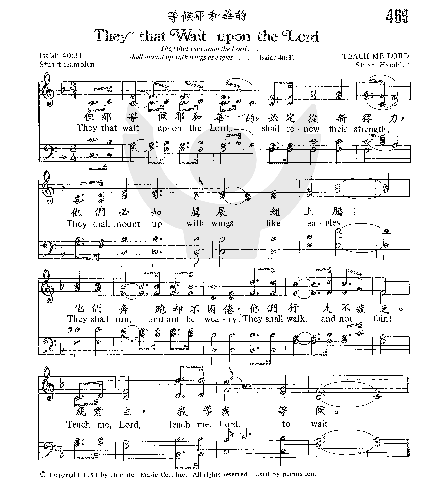

|
|
|
|
Teach Me Lord To Wait Lyrics – Reggie Smith, Wesley Pritchard, Ladye Love Smith Teach me Lord to wait down on my knees Teach me Lord to wait while hearts are aflame |
|
|
https://www.zanmeishige.com/tab/26044.html?songbook=1&index=469
 |
|
|
|
|

https://www.youtube.com/watch?v=qX431Sm2m2c -
https://youtu.be/GH11gkKqfWQ -
john Wayne inspired Stuart to write this song. he is being introduced by
Billy Graham in 1957
https://youtu.be/472ap1E4LTY
1264
They That Wait Upon The Lord 等候耶和华的
| Text: | Teach Me, Lord, to Wait |
| Author: | Stuart Hamblen |
| Tune: | [They that wait upon the Lord shall renew their strength] |
| Composer: | Stuart Hamblen |
| Short Name: | Stuart Hamblen |
| Full Name: | Hamblen, Stuart, 1908-1989 |
| Birth Year: | 1908 |
| Death Year: | 1989 |
Carl Stuart Hamblen

was born on October 20th, 1908, in Kellyville, Texas, the son of a traveling Methodist preacher, and founder of the Evangelical Methodist Church, Dr. J.H. Hamblen. Stuart’s career as a Country Western Gospel singer, composer, radio-movie personality, and master storyteller all began in 1926, on radio station on WBAP, Ft Worth, TX and sister station WFAA, Dallas, TX, where he became radio broadcasting’s first singing cowboy. The next major turning point in his career happened in 1929 where he won a talent show in Abilene, Texas and with the $100 cash prize in-hand, he headed for Camden, New Jersey, to the Victor Talking Machine Company to seek his fortune. Recording four songs for the forerunner of RCA Victor, Stuart then set out for Hollywood, California, where he auditioned at KFI and went on the air as “Cowboy Joe”. Later that year, he became a member of the original “Beverly Hill Billies” as “Dave”, radio’s first spectacularly popular western singing group. Seeing the success of having a group, Stuart decided to branch out on his own and formed one of his very first groups, King Cowboy and His Woolly West Revue. His group changed, both in name and in personnel, and by 1931, and for 21 years thereafter, Stuart stayed on top of the popularity charts on the West Coast with his radio programs: “Covered Wagon Jubilee”; “Stuart Hamblen and His Lucky Stars”; and the “Cowboy Church of the Air”.
During that time, his motion picture credits included: “In Old Monterey” with Gene Autry; “The Arizona Kid” and “King of the Cowboys” with Roy Rogers; “The Plainsman and the Lady” and “The Savage Hord” with Wild Bill Elliott; “Carson City Cyclone” and “The Sombrero Kid” with Don ‘Red’ Barry; “King of the Forest Rangers” with Larry Thompson; and “Flame of the Barbary Coast” with John Wayne. In 1979 he also narrated a gospel movie, “Mountain Lady”. Stuart also was a guest star on television shows such as The Johnny Cash Show and The Jimmy Dean Show.
During his long span on radio, Stuart composed western songs… many of which are still being recorded today: “Texas Plains“; “My Mary“; “Golden River“; “Walkin’ My Fortune“; and “Ridin’ Old Paint“. Later he wrote some of his greatest song classics: “It Is No Secret” – SEE FULL STORY (note: the original manuscript of which is buried in the cornerstone of one of the Copyright Buildings of the Library of Congress in Washington, D.C., and which has been translated into over 50 languages around the world and was the first song to ‘cross-over’ becoming #1 in Gospel/Country/and Pop categories and starting the trend for ballad style gospel songs); “This Ole House” (which was awarded 1954 Song of the Year, and was number one song hit in seven countries at the same time, and even on Brian Setzer’s album, The Dirty Boogie, which was on the Billboard’s Top 100 for 43 weeks!); “Remember Me, I’m the One Who Loves You“; “Teach Me, Lord, To Wait“; “Until Then“; “Open Up Your Heart (and Let the Sunshine In)“; “How Big Is God“; “His Hands“; plus over 225 other songs.
In 1945, Stuart became the first man to fly a horse when he flew his race horse, EL LOBO, from Los Angeles, California, to Bay Meadows on the Flying Tiger Airlines. EL LOBO won the Burlingame Handicap … and they flew home the same day. The history of the race horse was forever changed. The Bay Meadows racing form, “War Horse” was called “The Flying Horse” the day after the race.
In 1949, Stuart and his wife Suzy attended a prayer meeting at the home of Henrietta Mears. This was one of the meetings of the Hollywood Christian Group, and on that particular night, a young man named Billy Graham was there to speak to the group. Suzy made sure they were there early, and she and Henrietta disappeared into the kitchen, leaving Stuart and Billy alone. The two men hit it off right away, and Stuart asked Billy if he would like to come on his radio show to promote his tent crusade. Billy did show up at the radio station, and after the radio interview, Stuart urged his listeners to go down to the tent to hear more of Billy, and ended by stating “Make sure you all come, cause I’ll be there too!” Well, Suzy wasn’t going to let those words ring untrue. That evening, as Stuart started to settle in for the night, Suzy appeared, all ready to go out the door. She looked at Stuart and said, “You ready to go? You told everyone that you were going to be there. You don’t want to disappoint your fans!” So, Stuart went and sat front row center. Night after night, Stuart was there, front row center, until he could take it no more. What a lot of people don’t know, is that Stuart was the son of Dr. James Henry Hamblen, an itinerant Methodist circuit preacher and the founder of the Evangelical Methodist Church denomination, and conviction was hitting Stuart hard. Knowing that the tent crusade was scheduled to end in a couple of days, Stuart decided to escape; packed up his hound dogs, and headed our for a hunting trip.
In the early ’50′s, Stuart’s radio show was syndicated nationwide. Back then, the commercials were performed by the radio host during the show. The syndicate sponsors came to Stuart to let him know that the commercial he was to promote was for alcohol products. Stuart refused, due to the simple fact of his recent conversion to Christianity, (with Billy Graham), and his public renunciation of his alcoholic ways. He was not a man to go back on his word. The sponsors told him they would pull the plug on his show if he refused to do the commercial, and as a man of his word, he didn’t. So, the syndicate pulled their sponsorship, and in the last several shows, Stuart used them to let his nationwide-listening audience know why he would be leaving the air. Hearing this, in 1952, the Prohibition Party asked Stuart to run for the President of the United States on their ticket. Stuart was the type of man that if it was something new, it was surely an adventure! He had never done that before, and so he did! When the first returns came in he was actually ahead! When the final votes were counted, he had set a new record for votes for the Prohibition ticket, running 4th to Dwight Eisenhower.
Married to his wife, Suzy, for over 55 years, Stuart lived with her on their horse ranch in Santa Clarita (Los Angeles), California, where he produced his weekly nationally syndicated “Cowboy Church of the Air” program. They also bred Peruvian Paso Horses, and their stallion, *AEV Oro Negro+, was 3 times U.S. National Champion of Champions.
Stuart Hamblen died on March 8, 1989. Besides his wife, Suzy, he leaves two daughters, Veeva and Lisa Obee, and 10 grandchildren and 19 great-grandchildren. His beloved wife Suzy, followed him on June 2, 2008 at the age of 101.
--www.hamblenmusic.com/home
Tune Information
| Title: | [They that wait upon the Lord] (Hamblen 56111) |
| Composer: | Stuart Hamblen |
| Incipit: | 56161 61651 13332 |
| Key: | E♭ Major |
| Copyright: | © 1953 Hamblen Music |
那等候耶和華的必重新得力 以賽亞書四十31
但那1等候耶和華的必重新得力；他們必如鷹展2翅上騰；他們奔跑卻不困倦，行走卻不疲乏。
註1:
等候永遠的神，（28，）意即我們了結自己，就是停下我們自己的生活、工作和行動，接受神在基督�塈@我們的生命、我們的人位和我們的頂替。這樣等候的人，必重新得力，甚至到一個地步，必如鷹展翅上騰。他不僅行走奔跑，更在諸天之上翱翔，遠超每一屬地的阻撓。這是變化過的人…
註2:
鷹翅表徵基督復活的大能，神生命的大能，成了我們的恩典。（參林前十五10，林後四7，十二9上。）那些停下自己並等候耶和華的人，必經歷這復活的大能，得著變化，翱翔在諸天之上。（參腓四13，西一11。）
http://luke54.org/view/13/746.html
Until Then Stuart Hamblen
Words: Carl Stuart Hamblen (b. Oct. 20, 1908; d. Mar. 8, 1989)
Music: Carl Stuart Hamblen
Links:
Wordwise Hymns Stuart Hamblen born, died)
The Cyber Hymnal (Stuart Hamblen)
Note: Stuart Hamblen was a well-known country-western singer and Hollywood actor
in the 1930’s and 40’s. His popular radio program on the west coast of the
United States made him radio’s first singing cowboy. He also played characters
in ten western movies. At one point, he even ran for president of the United
States–and did quite well on the west coast!
Hamblen was the son of a Methodist preacher, but seemed to turn his back on the
values he’d been taught. He became known as a liar and a cheat, and his days
were filled with drunken carousing. But then, during Billy Graham’s evangelistic
meetings in Los Angeles, in 1949, Stuart Hamblen gave his heart to Christ. From
then on, his life took a radical new direction.
Mr. Hamblen gave up his acting career and began an itinerant ministry for the
Lord, bearing an effective testimony to the saving grace of God. He used his
musical talent in a significant way in the Lord’s service, writing quite a
number of gospel songs. It Is No Secret is the best known of these
About the prospect of his death, Stuart Hamblen said, “When you see me fall
asleep, say amen. But don’t you weep.” For the Christian, our coming departure
from this world into the presence of Christ, will be cause for rejoicing.
Certain conditions pertain, until that day. Then, for the saints, will come joy
and blessing. “He [God the Father will] send Jesus Christ, who was preached to
you before, whom heaven must receive until the times of restoration of all
things” (Acts 3:20-21).
Concerning our limitations in assessing the true value of our work–or that of
another person–Paul says, “Judge nothing before the time, until the Lord comes,
who will both bring to light the hidden things of darkness and reveal the
counsels of the hearts. Then each one’s praise will come from God” (I Cor. 4:5).
“For now we see in a mirror, dimly; but then face to face. Now I know in part,
but then I shall know just as also I am known” (I Cor. 13:12). What changes the
return of Christ will bring!
Those thoughts came to the mind of Stuart Hamblen one day in 1958, and it led to
the writing of popular gospel song, Until Then, that speaks of the dramatic
change we will experience when we go to be with Christ. It also reminds us of
the proper attitude we should have to the things of this present world, and how
we should live in the meantime, as we await the Lord’s return.
“This troubled world is not my final home” (Stanza 1). We’d better keep a loose
grip on the things of this life, because they’ll all be left behind one day.
“They’re borrowed for awhile” (Stanza 2). “This weary world with all its toil
and struggle” (Stanza 3), and the heartaches of today are not the end. In heaven
they’ll be gone forever (Rev. 21:4). In light of these things, as Stuart
Hamblen’s refrain tells us, we can “going on singing,” and “carry on” the work
that God has given us to do.
As the Lord Jesus expressed it in one of His parables:
“A certain nobleman went into a far country to receive for himself a kingdom and
to return. So he called ten of his servants, delivered to them ten minas, and
said to them, ‘Do business till I come [carry on, in other words].’” (Lk.
19:12-13).
And the business of believers today is to be “ambassadors for Christ” (II Cor.
5:20), and fulfil the Great Commission (Matt. 28:18-20). Further, the Scriptures
add an important note that is not specifically mentioned in Hamblen’s song. That
the contemplation of the return of Christ should motivate each of us to a life
of holiness.
“Denying ungodliness and worldly lusts, we should live soberly, righteously, and
godly in the present age, looking for the blessed hope and glorious appearing of
our great God and Savior Jesus Christ” (Tit. 2:12-13).
“We, according to His promise, look for new heavens and a new earth in which
righteousness dwells. Therefore, beloved, looking forward to these things, be
diligent to be found by Him in peace, without spot and blameless” (II Pet.
3:13-14).
“We know that when He is revealed, we shall be like Him, for we shall see Him as
He is. And everyone who has this hope in Him purifies himself, just as He is
pure” (I Jn. 3:2-3).
1) My heart can sing when I pause to remember
A heartache here is but a stepping stone
Along a trail that’s winding always upwards.
This troubled world is not my final home.
But until then my heart will go on singing,
Until then with joy I’ll carry on;
Until the day my eyes behold the city,
Until the day God calls me home.
Questions:
1) What all should Christians be doing to be ready for Christ’s return?
2) How can we balance practical living in this world, with emphasizing the
values of the next?
Links:
Wordwise Hymns Stuart Hamblen born, died)
The Cyber Hymnal (Stuart Hamblen
It Is No Secret Stuart Hamblen
ords: Carl Stuart Hamblen (b. Oct. 20, 1908; d. Mar. 8, 1989)
Music: Carl Stuart Hamblen
Links:
Wordwise Hymns
The Cyber Hymanl (Stuart Hamblen)
Note: The Wordwise Hymns link provides the story of Stuart Hamblen’s conversion,
and the interesting account of how this song came to be written. The Cyber
Hymnal does not have a page on the song itself, but has a brief note on Mr.
Hamblen.
There are some things we know about God and His works, but many more things that
are beyond our reach. To look at the world of nature with an unprejudiced eye is
to be aware that there is a God, and that He is powerful (Rom. 1:20). But most
of what we have learned about the Almighty has come to us through the inspired
revelation we call the Holy Bible. There, the Lord has revealed precisely what
we need to know in order to live to please Him. As Moses put it:
“The secret things belong to the LORD our God, but those things which are
revealed belong to us and to our children forever, that we may do all the words
of this law” (Deut. 29:29).
“Secret things”? Yes, there are still unknowns. (The Bible uses some form of the
word “secret” 93 times.) And another word that suggests hidden things is
“mystery.”
Many of us enjoy reading mystery stories. A “mystery” is something that is
secret, or obscure, that is to be revealed during the story. In the Scriptures,
this word is used more than two dozen times, and it has special theological
significance. A Bible mystery is: A sacred secret, some operation or plan of God
that was previously unknown, but now at last has been revealed. The biblical
mysteries are usually things that were hidden in Old Testament times, but
unveiled in the New. For example:
¤ In Matthew 13, the Lord Jesus speaks of the mystery form of the kingdom of
heaven (Matt. 13:11). It was not understood earlier that there would be a period
of time between Christ’s first advent and His return. Christ taught that the
kingdom of heaven on earth would have some unique features, during the absence
of the King.
¤ There was also the mystery of the church as the spiritual body of Christ, made
up of saved Jews and Gentiles united as one (Eph. 3:1-11; 6:19; Col. 4:3).
¤ The rapture of the saints at the end of the Church Age was another mystery,
not seen in Old Testament times, but since revealed through the apostles (I Cor.
15:51-52; I Thess. 4:14, 17).
There are quite a number of these “sacred secrets” uncovered in the New
Testament. But still we must confess there are many things we don’t know. In the
words of Job, “Indeed these are the mere edges of His ways, and how small a
whisper we hear of Him” (Job 25:14). However, it is counterproductive to dwell
on things that are beyond our reach, when so many great truths are presented to
us.
John writes: “This is the testimony: that God has given us eternal life, and
this life is in His Son. He who has the Son has life; he who does not have the
Son of God does not have life. These things I have written to you who believe in
the name of the Son of God, that you may know that you have eternal life” (I Jn.
5:11-13). We can know we’re saved. That’s no secret! Paul writes to Timothy, “I
know whom I have believed and am persuaded that He is able to keep what I have
committed to Him until that Day [i.e. the day of Christ’s return]” (II Tim.
1:12).
This distinction between what is still secret, and what we now know for certain,
is the subject of Stuart Hamblen’s popular gospel song It Is No Secret. Whatever
our trial might be, whatever burden we carry, whatever struggle we face, God, in
His grace, can meet our need. What if “someone slipped and fell,” when tempted
(Stanza 1)? What if we lack courage or strength? God has the answer. Mr.
Hamblen’s words, “There is no power can conquer you while God is on your side”
(Stanza 2) are an accurate reflection of what the Bible teaches. “If God is for
us, who can be against us?” (Rom. 8:31).
Praise the Lord, His throne room is always accessible to struggling believers.
There we can “obtain mercy and find grace to help in time of need” (Heb.
4:15-16). As the refrain of the song puts it:
It is no secret what God can do.
What He’s done for others, He’ll do for you.
With arms wide open, He’ll welcome you–
It is no secret what God can do.
Questions:
1) What are some of the things about the Lord that you “know” for certain?
2) How do these things encourage you?
Links:
Wordwise Hymns
The Cyber Hymanl (Stuart Hamblen)
https://wordwisehymns.com/2011/03/11/it-is-no-secret/
How Big Is God Stuart Hamblen
Words: Carl Stuart Hamblen (b. Oct. 20, 1908; d. Mar. 8, 1989)
Music: Carl Stuart Hamblen
Links:
Wordwise Hymns (Stuart Hamblen born, died)
The Cyber Hymnal (Stuart Hamblen)
Hymnary.org
Note: Hamblen acted in cowboy movies with Roy Rogers and Gene Autry, and was a
friend of actor John Wayne. He was a singing cowboy on the radio, with
considerable popularity, especially on the west coast of America. But one
important thing was missing in his life.
A thousand years before the time of Christ, a hulking Philistine warrior named
Goliath seemed big enough to beat anyone. When the two armies were arrayed
against each other, Goliath boldly issued a challenge to Israel. He called for
them to select a man to fight him. “If he is able to fight with me and kill me,
then we will be your servants. But if I prevail against him and kill him, then
you shall be our servants and serve us” (I Sam. 17:9).
But we read that all the army of Israel was “dismayed and greatly afraid” (vs.
11). Even King Saul was terrified, though the Bible says was head and shoulders
taller than anyone else in the nation (I Sam. 9:2). It took a young shepherd boy
named David to face the challenge. We learn that he was an expert with a
slingshot. But even that might not have been enough against an experienced
warrior who towered about a metre above him.
The confidence of the boy was not simply in his own skill. Since Israel was the
chosen people of God, he realized the reputation of the Lord was at stake. When
he stood before the giant, he declared that it was his intention to kill him.
“Then all this assembly shall know that the Lord does not save with sword and
spear; for the battle is the Lord’s, and He will give you into our hands” (I
Sam. 17:47). God was clearly bigger than Goliath!
The word “big” is used in our English Bibles (NKJV) in only one application:
strangely, it’s to describe the “big toe” of the high priest (Lev. 8:23).
Rather, it is the word “great” that is found, dozens of times in reference to
the Lord God.
He has great power–on earth and in the heavens (Exod. 32:11; Jer. 32:17); great
mercy and kindness (II Chron. 1:8; Ps. 117:2); great honour, majesty, and glory
(Ps. 104:1; Ps. 138:5). He is a great King (Ps. 47:2), and is often described as
“great and awesome” (Deut. 7:21). He is so great in these and other ways that
His greatness is described as “unsearchable,” or immeasurable (Ps. 145:3). Such
an infinitely great God should inspire in us great fear and reverence (Ps.
89:7), and great praise (Ps. 48:1).
Whether or not young David was big enough to slay Goliath became irrelevant. God
was! The power of Almighty God was arrayed against puny, insignificant human
strength that day, and the outcome was inevitable. And the Lord can do far more
than that. He can cleanse a sinner’s heart, and transform his life by the power
of His Holy Spirit. “Though your sins are like scarlet,” God says, “they shall
be as white as snow” (Isa. 1:18).
That happened to a wild rebel cowboy, a Country-western singer song-writer named
Stuart Hamblen. His father was a preacher, so we know he’d had an early
Christian influence, but he turned his back on it. He became a hard-drinking,
foul talking reprobate. But his wife Suzie was a believer, and when evangelist
Billy Graham was planning a series of meetings in Los Angeles in 1949, Suzie was
heavily involved in the organizing.
Stuart’s wife encouraged him to attend. He did, and the message of the gospel
stirred his heart. Back home, he found he was unable to sleep, thinking about
his sinful life, and where he was heading in the end. About four in the morning,
he called the hotel where the Graham team was staying, and asked to see Dr.
Graham. He arrived at the hotel an hour later, and there he made a decision to
trust Christ as his Saviour.
Hamblen called his mother, and she shed tears of joy, at the news. The power of
God changed his life completely, and he became an effective ambassador for the
Lord Jesus. Overwhelmed at what God had done, he wrote a song especially for
Billy Graham’s soloist George Beverly Shea to sing. The song is How Big Is God.
The refrain says:
How big is God!
How big and wide His vast domain!
To try to tell these lips can only start;
He’s big enough to rule His mighty universe,
Yet, small enough to live within my heart.
That is big enough indeed!
Questions:
1) What aspect of the bigness (greatness) of God has been especially meaningful
to you lately?
2) What other hymns do you know and use that celebrate the greatness of God?
Links:
Wordwise Hymns (Stuart Hamblen born, died)
The Cyber Hymnal (Stuart Hamblen)
Hymnary.org
https://wordwisehymns.com/2015/04/17/how-big-is-god/